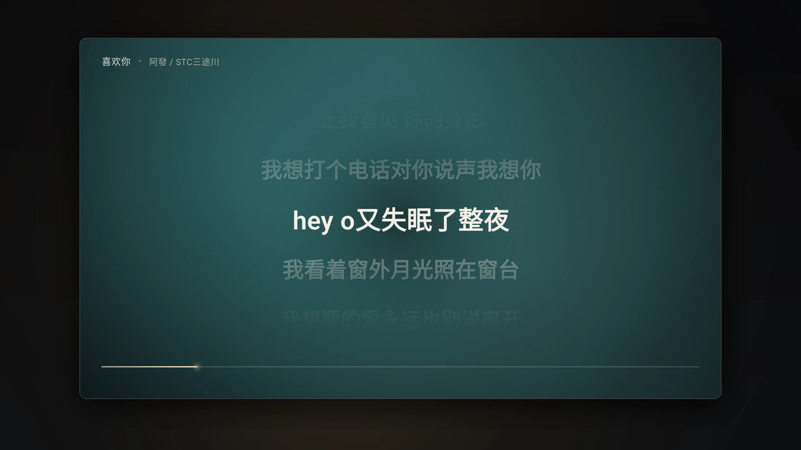
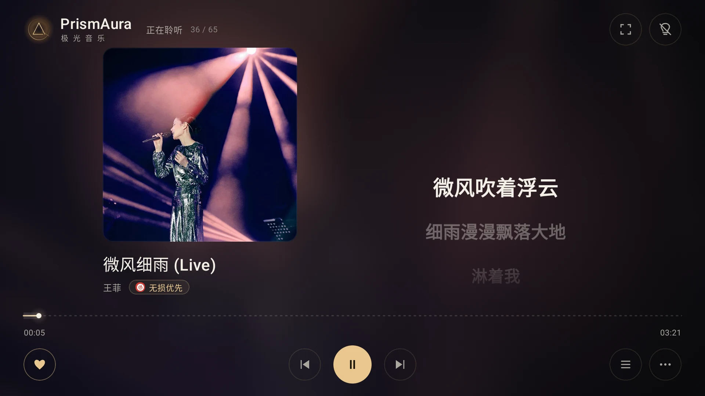
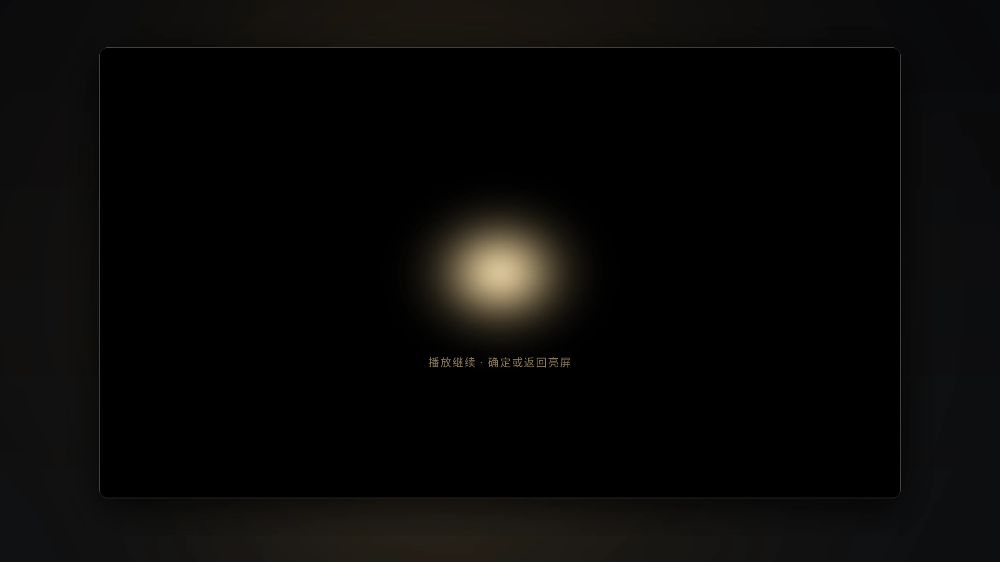
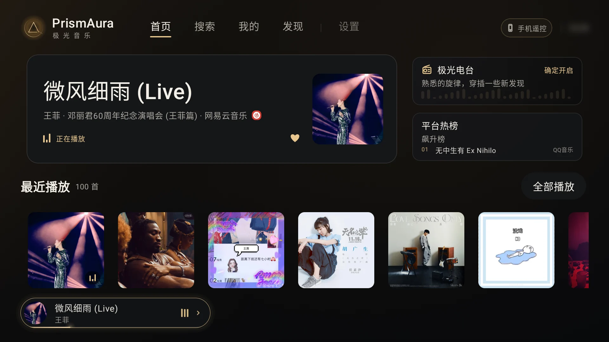
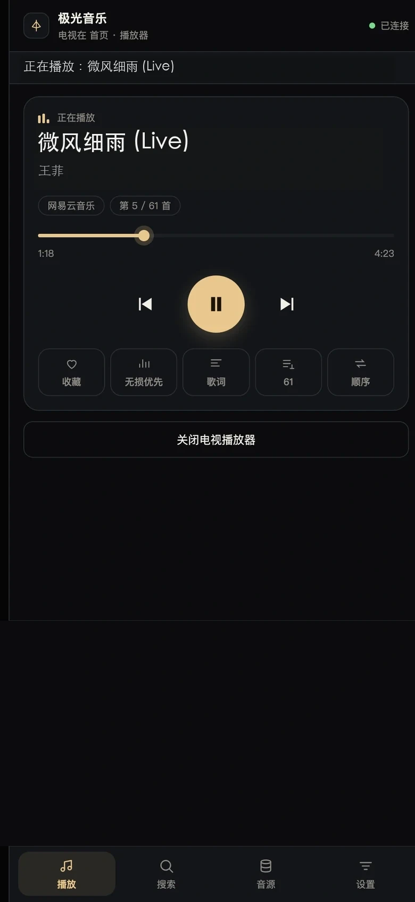

01 / IMMERSIVE沉浸播放
让歌词成为画面。
封面氛围铺开，歌词随音乐滚动；播放控件淡出，方向键可快进或快退。
ANDROID TV · OPEN SOURCE
遥控器选歌，手机接手输入；沉浸看歌词，或关灯继续听。每个细节都围绕客厅的大屏和方向键安排。

01 THE LISTENING ROOM
封面与歌词并排，播放控制留在手边。遥控器的方向键负责时间与导航，确定键负责播放，不必先找一条控制栏。
02 WORD-SYNC LYRICS
原文、翻译与注音同步滚动；插件提供词级时间戳时逐字高亮。不同音源返回的歌词精度可能不同。
逐字高亮需要插件提供词级时间戳；没有词级数据时，仍可按句同步滚动。翻译与注音也取决于插件返回的歌词内容。
03 SET THE ROOM YOUR WAY
想看歌词时进入沉浸播放；准备只听音乐时关灯，声音继续，按键即可回到画面。

01 / IMMERSIVE封面氛围铺开，歌词随音乐滚动；播放控件淡出，方向键可快进或快退。

02 / SCREEN OFF屏幕渐隐至黑，播放持续；确定或返回键可以唤醒画面。电视背光是否关闭由设备决定。
插件支持时，可导入单曲或歌单链接，也可使用平台扫码登录。歌词、登录和导入能力因插件而异；歌手导入目前不支持。
手机遥控二维码由 PrismAura 生成；音源登录二维码则需要对应插件提供支持。极光电台、播放失败自动换源等功能，也等你下载后继续探索。
04 MADE FOR THE REMOTE
从首页接着听，到发现、收藏和设置；扫码之后，手机也能输入和控制。选择一项，看看它在电视上的样子。

TV · HOME继续播放、最近播放和平台内容都从这里开始。正在播放的经典曲目会留在视线中央。
首页内容会随你的本机播放记录变化。
界面截自 Android TV 模拟器；推荐内容随所装音源变化。二维码画面已替换为不可连接的演示图。

已连接电视05 YOUR PHONE, YOUR REMOTE
同一局域网扫码打开网页。用手机键盘搜索歌曲，也能控制播放、管理音源和备份恢复，不用再装一款 App。
06 YOUR SOURCES, YOUR CHOICE
兼容 MusicFree 插件生态。搜索、榜单、歌词、导入和平台登录取决于所装插件；手机遥控二维码由 PrismAura 提供。
播放失败自动换源设置中开启后，当前音源都无法播放时再尝试其他已启用音源；默认关闭。
查看插件能力与接入说明